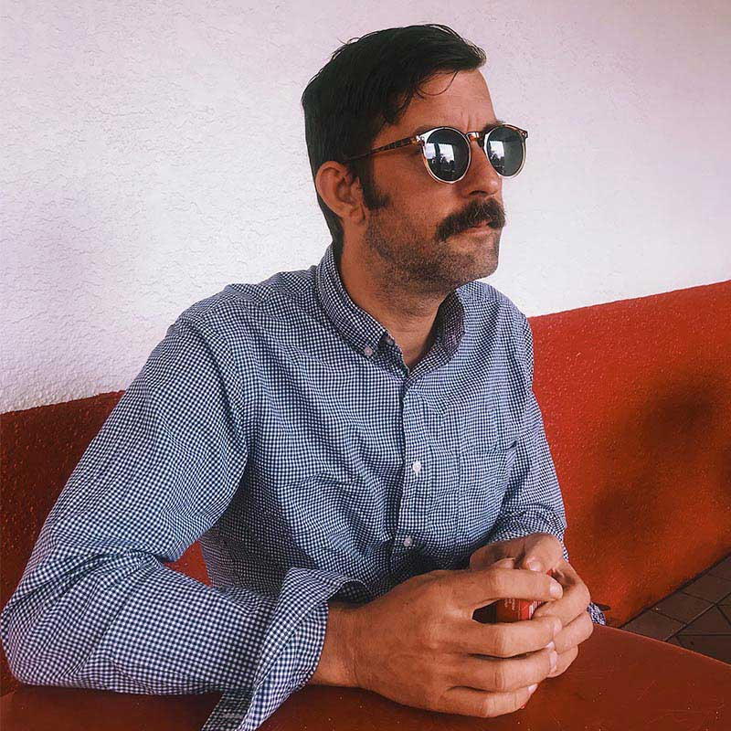
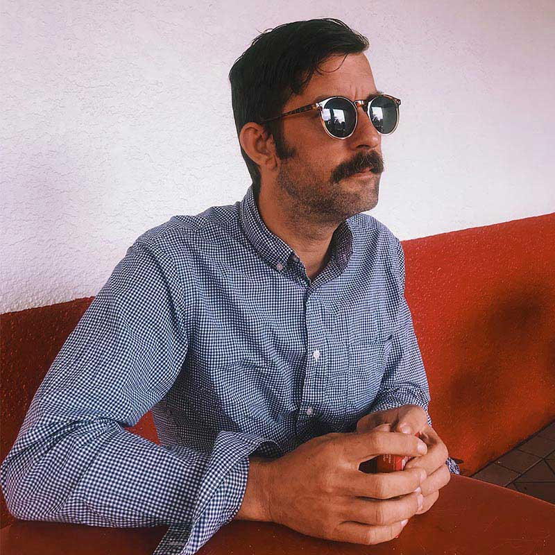

> Note Resolve - Meg Woof
Recorded in September 2020, this broadcast was put together to
highlight the creative resolve of underground experimental
music communities since the beginning of the pandemic. This
show presents a selection of tracks from the heartening
abundance of independent experimental music that has been
released into the world in the face of intense new challenges
and restrictions.
> Jumpup4jah-3 - Smallboydanger
Jumpup4jah-3 - Is the third progression of an audio work
deepening an exploration into playing mass and black
transformation as a technology for the future. The other two
recordings are hosted by NTS and Emulsion magazine
Smallboydanger - a project by curtly thomas focuses on
identity, transformation and character development; engaging
in forms of mythmaking between historic and contemporary image
discourse.
> Landlocked: music from and related to the films of Black
Audio Film Collective - Jim Janco
The Black Audio Film Collective, inaugurated in 1982 and dissolved
in 1998, are widely credited as one of the most influential artist
groups to emerge from Britain in the second half of the twentieth
century. This show traces the Collectives' remarkable innovations,
references and influence by exploring their striking film soundtracks
which resound with and against the moving images seen on screen and
situating their formidable achievements within wider historical,
political and musical frameworks.
> Bradford Bailey - The Hum
Bradford Bailey (b.1978, USA) is a writer currently based in
London. His work - published extensively in the form of
articles, essays, and liner notes - is dedicated to ideas
surrounding sound and music, offering particular focus to the
exploration of pathways toward mutual aid, shared and
cross-cultural understanding, collectivism, and community. He
is also the writer of The Hum, a blog dedicated to supporting
historic and contemporary music which exists beyond the realms
of mainstream interest.
 
